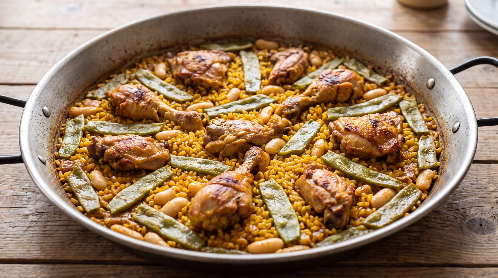

Paella valenciana, paso a paso

La paella valenciana es, posiblemente, el plato más reconocible de la cocina española. Nació en la huerta de Valencia como comida de campo: un arroz cocinado al aire libre, con lo que había a mano, sobre fuego de leña de naranjo. De aquella sencillez viene su grandeza, porque una buena paella no necesita grandes lujos, sino buen producto y paciencia.
El secreto no está en un ingrediente milagroso, sino en el orden. Primero se sofríe la carne despacio, hasta que dora bien; después las verduras; luego el tomate, que debe perder toda el agua; y solo entonces el arroz, que se nacara unos segundos antes de añadir el caldo caliente. A partir de ese momento, no se remueve: el arroz tiene que cocer tranquilo y repartido.
El premio final es el socarrat, esa capa de arroz tostado que se forma en el fondo cuando el caldo se ha consumido. Se consigue subiendo el fuego el último minuto y escuchando: cuando huele a tostado (pero antes de que huela a quemado), la paella está lista. Se retira del fuego, se cubre con un paño y se deja reposar cinco minutos antes de servir.
| Ingrediente | Cantidad |
|---|---|
| Arroz redondo | 400 g |
| Pollo y conejo troceados | 700 g |
| Judía verde plana y garrofó | 250 g |
| Tomate maduro rallado | 1 unidad |
| Caldo o agua | 1 litro |
| Azafrán, pimentón, aceite y sal | al gusto |
Preparación
- Dora la carne en aceite caliente, con sal, hasta que coja color por todos lados.
- Añade las verduras y rehoga; incorpora el tomate y cocina hasta que se evapore el agua.
- Agrega el pimentón, remueve rápido y vierte el caldo caliente con el azafrán.
- Cuando hierva, añade el arroz repartido. No vuelvas a removerlo.
- Cuece 18 minutos; sube el fuego al final para lograr el socarrat y deja reposar.
Galería
Toca cualquier foto para verla a pantalla completa.